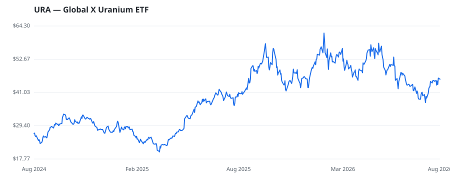

bullish · bearish · n/a — dots: price>SMA10 · SMA10>SMA50 · SMA50>SMA200 · up>down volume (20d)

🛒 Newly buying: TORNO CAPITAL, LLC (+28%, 6.7% of book) · NCP Inc. (+18%, 0.2% of book)
| Fund | Fund alpha vs SPY | Position | % of book |
|---|---|---|---|
| TORNO CAPITAL, LLC | +28% | $24M | 6.7% |
| HERITAGE OAK WEALTH ADVISORS LLC | -15% | $1M | 0.3% |
| NCP Inc. | +18% | $0M | 0.2% |
Hedge data: SEC EDGAR 13F · ranked funds beat SPY in >50% of their quarters · fund alpha = mirror-portfolio return minus SPY.